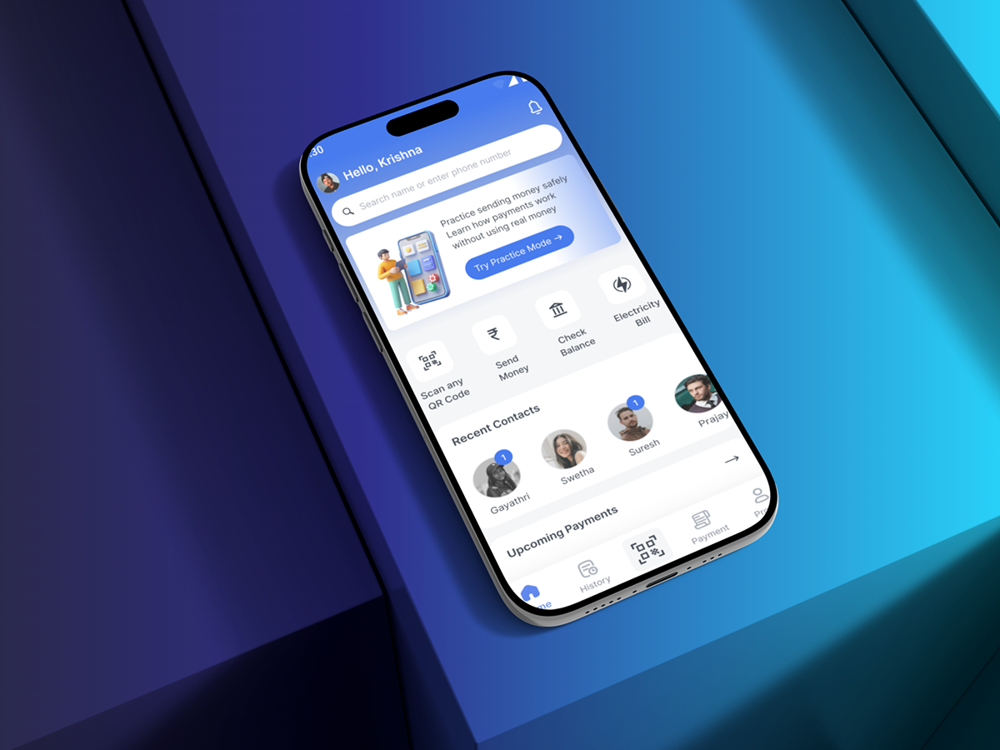
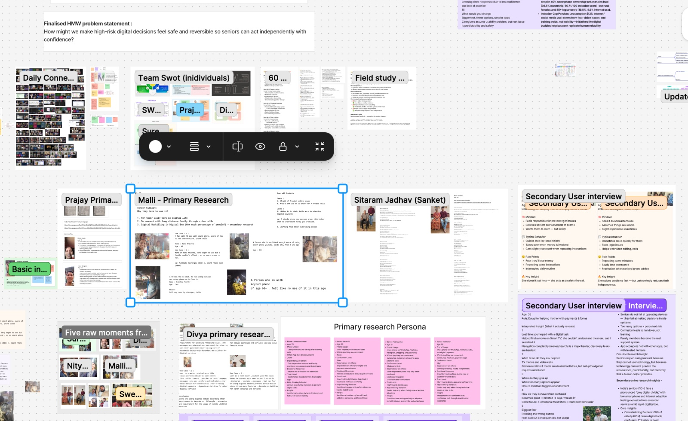

Fintech · Research + Product Design
PayNora
Making digital payments feel safer for older adults.
Over two months, our team designed a payment app concept to help older adults practise safely and pay with confidence.
Explore the case study
Audience
Older adults building confidence with digital payments
Challenge
A payment can feel hard to undo
Project
Two-month team project, from research to prototype
Design anchors
Senior Mode · Practice · Caregiver control
01 · Research
The hardest part wasn’t pressing Pay. It was trusting what happened next.
We paired secondary research with six interviews with adults aged 55–72 and observed payments at home and at a shop. The concern wasn’t just using the technology; it was making a mistake that felt hard to undo. People wanted reassurance without giving up independence.

What we heard and noticed
The question we worked around
How might we help older adults feel sure about a payment without taking away their independence?
02 · Synthesis & ideation
We began designing for confidence, not just fewer steps.
People wanted to pay independently, but feared getting an important step wrong. We prioritized clearer choices and spacing, then developed Senior Mode and Practice Mode. Fraud alerts and caregiver support remained ideas to evaluate.
The person in our scenario
A shopkeeper paying a supplier
A 65-year-old shop owner making a business payment.
The moment we designed around
A supplier payment shouldn’t mean asking someone else to take over.
We designed around a shop owner paying a supplier—a familiar task she wanted to complete herself.
What we wanted to make possible
Safe practice, clear payment steps, and support for larger amounts.
How we shaped the payment journey
Try it first. Check the details. Then pay.
- 01Senior ModeFind the main actions
- 02Practice ModeTry with no money at risk
- 03Review paymentCheck who and how much
- 04Extra checkFor larger payments
- 05Pay independentlySee a clear confirmation
Three decisions we carried into the design
03 · Visual direction
We kept the interface calm and made important details easier to scan.
We used blue for main actions, familiar status colours, readable type, and consistent spacing to keep screens clear without feeling clinical.
Colours for actions and feedback
- Primary blue
#4472E9 - Neutral dark
#111827 - Success
#0F843E - Alert
#D64545 - Warning
#AF7419 - Light gray
#F3F4F6
Type we chose for clear reading
Aa Inter
16px body text, clear type sizes, readable labels.
Details we designed for everyday use
- 44pxminimum tap target
- 8ptspacing scale
- 4.5:1contrast target
- Plain labelsactions say what happens
Project document PayNora visual design system Colour, typography, components, and accessibility · open here
If the document does not appear here, open the PayNora visual design PDF.
04 · The experience
We built in a pause before money changed hands.
- Home
Familiar actions first; Practice Mode easy to find.
- Practice
A clear, no-money simulation.
- Payment
Recipient and amount easy to check.
- Safety check
Caregiver approval for larger payments; everyday payments stay independent.
- Confirmation
A clear result and next step.
We also explored language support, voice assistance, trusted contacts, and fraud alerts; each needs further research.
Prototype testing, then iteration
Testing showed strong Easy Mode task success, alongside Practice Mode drop-off and misclicks on closely spaced controls.
Moderated prototype results, not live use. We increased spacing after the misclicks, but haven’t retested that change.
One change we made: making Practice Mode easier to start
- Where people got stuckPractice and safety content felt dense together.
- What we changedSeparated the content, simplified the cards, clarified where to start.
- What we learned66.7% first-time completion on the revised screen; no before-and-after comparison.
05 · What’s next
Testing gave us a first read. There’s still more to learn.
The prototype gave us an early read, not a picture of everyday use. Next, we’d test whether the changes help people pay independently.
What we’d test next
- Retest the wider spacing and measure whether misclicks go down.
- See whether someone can practise once, then complete a payment independently.
- Explore whether caregiver alerts, voice, or language support help without taking control away.
Project document PayNora USP & use case One-page overview · open here
If the document does not appear here, open the PayNora USP and use-case PDF.